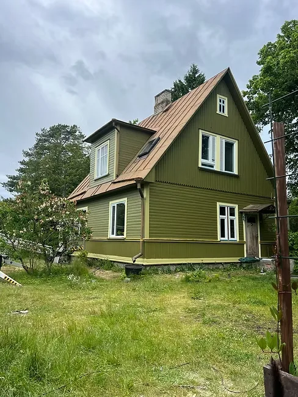

Fassaadi värvimine Tallinnas eramul
Tehtud töö näide välisfassaadi värskendamisest.
See tehtud töö näitab, kuidas puitfassaad enne värvimist puhastatakse, kahjustused parandatakse, pind krunditakse ning ligipääs ja värvimiskorrad planeeritakse.

Töö kirjeldus
Fassaadi värvimine on nähtav töö, kuid selle kestvus sõltub eeltööst. Tallinnas ja Harjumaal mõjutavad tulemust ilm, fassaadi materjal, niiskus ja vana värvi seisukord.
Lähteolukord
Väsinud fassaadil võib olla mustust, lahtist värvi, päikese kahjustust või niiskuse jälgi. Kui need kohad enne värvimist lahendamata jätta, ei püsi uus viimistlus piisavalt kaua.
Lahendus
Pind puhastatakse, lahtine värv eemaldatakse, probleemsed kohad krunditakse ja alles siis tehakse fassaadi värvimine sobiva ilmaga. Vajadusel kasutatakse tellinguid või muud ohutut ligipääsu.
Miks see on oluline?
Sellised tehtud tööde kirjeldused aitavad kliendil aru saada, millist tööjärjekorda ja ettevalmistust sarnane objekt vajab. Fotod ja tööetappide kirjeldused aitavad hinnata soovitud tulemust ning planeerida oma objekti töid.
Fassaadi värvimise töö käik
Fassaadi värvimine Tallinnas algab alati pinna seisukorra hindamisest, sest puitfassaad, krohvfassaad ja varasemalt värvitud laudis vajavad erinevat ettevalmistust. Selle tehtud töö puhul oli eesmärk taastada eramu välisilme nii, et uus viimistlus kaitseks pinda ilmastiku, UV-kiirguse ja niiskuse eest. Töö ei piirdu ainult värvikihi lisamisega: oluline on fassaadi pesu, lahtise värvi eemaldamine, kahjustunud kohtade kontroll, kruntimine ja sobiva fassaadivärvi kasutamine.
Teeme fassaaditöid etapiti. Kõigepealt puhastame pinna mustusest ja tolmust ning kontrollime ühenduskohti, aknaümbruseid, nurki ja kohti, kuhu vesi võib koguneda. Kooruva värvi ja ebaühtlased kohad parandame enne kruntimist ning värvimist.
Mida klient sarnase töö pakkumiseks saata võiks?
Täpsema fassaadi värvimise hinnapakkumise jaoks on kasulik saata fotod igast maja küljest, ligikaudne fassaadi pindala, info vana värvi seisukorra kohta ja aadress või piirkond. Kui objekt vajab tellinguid, mõjutab see töö hinda ja ajakava. Samuti on oluline teada, kas soovitakse ainult värvimist või ka fassaadi parandusi, laudise vahetust, vuukide kontrolli, aknapalede viimistlust või sokli hooldust.
See projektileht on tehtud töö näide, mitte eraldi teenuselehe asendus. Üldise teenuse, hinnastamise ja tööde valiku kohta on põhileht fassaadi värvimine ning laiem ülevaade lehel fassaaditööd. Sobiva töömahu valikul lähtume fassaadi seisukorrast ja soovitud lõpptulemusest.
Tehtud töö tulemus
Fotol on meie tehtud fassaadi värvimise tulemus Tallinnas. Vastupidava viimistluse jaoks on oluline pinna puhastus, kahjustuste parandamine ja sobiva värvi valik.
Korduma kippuv küsimus
Kas fassaadi saab värvida kohe pärast pesu?
Ei pruugi. Pind peab enne värvimist olema piisavalt kuiv ja lahtised kihid tuleb eemaldada.